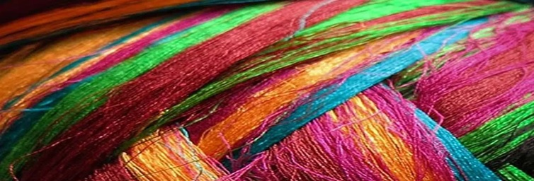

Prezentare
O facultate modernă, pentru o lume dinamică!

Ingineria în domeniul textil este o vocaţie. Plasată abia sesizabil la graniţa dintre tehnică, ştiinţă şi artă, ingineria textilă şi de pielărie are valenţe profund umaniste… Pentru că textilele fac parte din viaţa noastră de zi cu zi, sub forma îmbrăcămintei, a decoraţiunilor interioare, a echipamentelor de protecţie, a compozitelor pentru industria automotivă şi aeronautică, a materialelor pentru construcţii şi pentru agricultură, a grefelor vasculare, a aţelor chirurgicale, a e-textilelor şi sub multe, multe alte forme.
Istoric
Facultatea de Design Industrial și Managementul Afacerilor din Iaşi îşi asumă misiunea de a forma ingineri şi manageri care vor avea competenţe tehnice, tehnologice, economice şi manageriale, capabili să se adapteze cerinţelor economiei de piaţă şi noilor tehnologii, cu şanse reale în competiţia de pe piaţa forţei de muncă din ţară şi din străinătate. Ca formă de învăţământ universitar, facultatea noastră a fost înfiinţată în 1934 la Bucureşti, sub numele de “Şcoala Superioară de Textile”. Este prima facultate de profil din ţară şi SINGURA care oferă specializări pentru TOATE sectoarele industriei textile şi de pielărie. La Iaşi funcţionează începând cu 1952, iar în 1955 a fost integrată în Institutul Politehnic “Gheorghe Asachi”. Din 1995 facultatea a devenit membru AUTEX – Asociaţia Europeană a Universităţilor Textile. Din 1999 specializările facultăţii sunt recunoscute de către FEANI – Federaţia Europeană a Asociaţiilor Naţionale ale Inginerilor). Începând cu anul 2000, diplomele pe care le emitem absolvenţilor sunt recunoscute de către Institutul Textil din Manchester, UK.